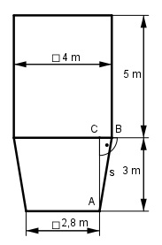

Aufgabe 273 Der Kohlenbunker ist oben offen. Wie viel m3 Kohlen fasst er, und wie groß ist der Materialbedarf M in m2?

Volumen V = Pyramidenstumpf + Prisma Pyramidenstumpf: VPS = m3 VPS = m3 VPS = (7,84 + 2,8 * 4 + 16) m3 VPS = 35,04 m3 Prisma: VP = G * h = 42 m2 * 5 m = 80 m3 V = VPS + VP = 35,04 m3 + 80 m3 = 115 m3 M = Grundfläche G + 4 * Seitenfläche S1 + + 4 * Seitenfläche S2 Satz von Pythagoras im Dreieck ABC: 4 m - 2,8 m AB = -------------- = 0,6 m 2 s2 = AB2 + AC2 = 0,62 m2 + 32 m2 = 9,36 m2 |√ s = 3,06 m 4 + 2,8 M = 2,82 + 4 * ----------- * 3,06 + 4 * 4 * 5 m2 2 M = 7,84 m2 + 41,6 m2 + 80 m2 = 129,4 m2